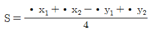
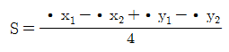
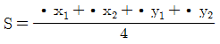
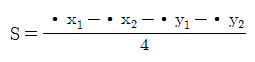

지적기능사 (2005-01-30 기출문제)
1과목: 지적일반(임의구분)
1. 지적 공부 등록 사항의 사실 여부를 심사하는 협의의 행정 행위인 지적 조사의 구성 요소가 아닌 것은?
- 지가조사
- 지번조사
- 지목조사
- 소유자 조사
(정답률: 60%)

2. 토지 등록의 원리로 우리나라에서 적용해 온 지적의 원리로 적합치 않은 것은?
- 자유주의
- 형식주의
- 공개주의
- 국정주의
(정답률: 79%)
3. 서로 연접되는 토지사이에 고저가 있을 경우 그 지물 또는 구조물의 어느 부분을 지상경계로 결정하는가?
- 오른쪽
- 왼쪽
- 상단부
- 하단부
(정답률: 57%)
4. 지목변경을 설명하고 있는 것은?
- 임야대장 및 임야도에 등록된 토지를 토지대장 및 지적도에 옮겨 등록하는 것
- 지적공부에 등록된 1필지를 2필지 이상으로 나누어 등록하는 것
- 지적공부에 등록된 2필지 이상을 1필지로 합하여 등록하는 것
- 지적공부에 등록된 지목을 다른 지목으로 바꾸어 등록하는 것
(정답률: 60%)
5. 지적공부의 비치를 통해 등록 사항을 언제나 외부에서 인식하고 활용할 수 있도록 하고 있는 이론적 근거는?
- 공신의 원칙
- 공시의 원칙
- 직권등록주의
- 전필등록주의
(정답률: 78%)
6. 임야도에서는 지번 앞에 무엇을 표기하여 지적도와 구분 하는가?
- 산
- 임
- 토
- 매
(정답률: 80%)
7. 필지의 배열이 불규칙한 지역에서 진행 순서에 따라 지번을 부여하는 방법으로 가장 타당한 것은?
- 기우식
- 사행식
- 단지식
- 기번식
(정답률: 78%)
8. 지적의 3요소에 해당되지 아니 하는 것은?
- 토지
- 건물
- 등록
- 공부
(정답률: 85%)
9. 지적도에 관한 설명으로서 잘못된 것은?
- 지적공부의 하나이다.
- 토지대장에 등록된 토지만을 등록한다.
- 토지위치 표시의 중요한 역할을 한다.
- 우리나라 지적도의 축척은 모두 4종이다.
(정답률: 66%)
10. 지적의 기능으로 타당하지 않은 것은?
- 토지의 효율적인 관리를 위한 자료
- 토지이용계획의 기초자료
- 토지에 대한 과세의 기준
- 토지의 증대에 대한 기능
(정답률: 62%)
11. 지적도근측량의 계산방법에 해당되지 않는 것은?
- 도선법
- 다각망도선법
- 교회법
- 망평균계산법
(정답률: 61%)
12. 도면의 재작성 방법으로 적당하지 않은 것은?
- 직접자사법
- 간접자사법
- 전자자동제도법
- 간접복사법
(정답률: 66%)
13. 축척 1:2400인 지역에서 도상거리 1.2mm는 실제거리로 얼마인가?
- 1.22m
- 2.44m
- 2.88m
- 3.66m
(정답률: 61%)
14. 세부측량에서 도곽선의 신축량 계산방법으로 맞는 것은?(단, S=신축량, κ X1=왼쪽 종선의 신축된 차, κ X2=오른쪽 종선의 신축된 차, κ Y1=윗쪽 횡선의 신축된 차, κ Y2=아래쪽 횡선의 신축된 차)(오류 신고가 접수된 문제입니다. 반드시 정답과 해설을 확인하시기 바랍니다.)




(정답률: 18%)
15. 지적삼각보조점의 일련번호 부여시에 일련번호 앞에 붙이는 명칭은?
- 교점
- 보
- 교
- 가, 나, 다…
(정답률: 40%)
16. 지적삼각점에서 좌표계산의 단위는 무엇인가?
- km
- mm
- cm
- m
(정답률: 36%)
17. 측판측량을 교회법으로 행할 때의 설명으로 옳지 않은 것은?
- 전방 또는 측방교회법에 의한다.
- 3방향 이상의 교회에 의한다.
- 방향각의 교각은 60°이상 120°이하로 한다.
- 방향선의 도상길이는 10cm 이하로 하여야 한다.
(정답률: 60%)
18. 다음 축척 중 가장 대축척인 것은?
- 1/500
- 1/1000
- 1/3000
- 1/6000
(정답률: 56%)
19. 지적측량의 대상이 되는 것은?
- 수준측량
- 하천측량
- 신규등록측량
- 터널공사측량
(정답률: 61%)
20. 지적도근측량에서 1등도선의 연결오차 한계는? (단, n은 각 측선 수평거리의 총합계를 100으로 나눈 수)
- 당해지역 축척분모의
 cm 이하
cm 이하 - 당해지역 축척분모의
 cm 이하
cm 이하 - 당해지역 축척분모의
 cm 이하
cm 이하 - 당해지역 축척분모의
 cm 이하
cm 이하
(정답률: 48%)
2과목: 지적측량(임의구분)
21. GPS의 구성을 3요소로 구분할 때 해당되지 않는 것은?
- 지상 제어 부분
- 우주 공간 부분
- 사용자 부분
- 측정 부분
(정답률: 50%)
22. 지적측량의 내용 중 기초측량의 종류에 해당되지 않는 것은?
- 지적삼각측량
- 지적삼각보조측량
- 세부측량
- 지적도근측량
(정답률: 78%)
23. 도선법으로 지적도근측량을 하는 경우 일반적인 경우 가장 적합한 도선은?
- 결합도선
- 왕복도선
- 폐합도선
- 개방도선
(정답률: 49%)
24. 측판측량에 의한 세부측량을 도선법에 의할 때 도선의 변수에 대한 제한 기준은?
- 5개 이하
- 10개 이하
- 20개 이하
- 40개 이하
(정답률: 46%)
25. 임야도를 비치하는 지역의 측판측량 방법에서 거리측정단위는?
- 5cm
- 10cm
- 30cm
- 50cm
(정답률: 29%)
26. 다음 중 현행 지적법상 분류된 지목은?
- 아파트용지
- 운동장
- 종교용지
- 유치원용지
(정답률: 77%)
27. 임야대장 및 임야도에 등록된 토지를 토지대장 및 지적도에 옮겨 등록하는 것을 무엇이라 하는가?
- 신규등록
- 등록전환
- 토지분할
- 지목변경
(정답률: 80%)
28. 지적법의 성격으로 옳지 않은 것은?
- 지적에 관한 기본법이다.
- 민법상의 특별법 성격을 갖는다.
- 순수한 토지 사법에 속한다.
- 절차법이면서 동시에 실체법적 성격을 갖는다.
(정답률: 54%)
29. 토지의 이동사항이 발생 되었을 때의 조사와 결정권은?
- 판사와 검사
- 도지사와 경찰서장
- 소관청
- 읍장, 면장
(정답률: 87%)
30. 축척변경으로 감소된 면적에 대한 청산금은 누가 부담하는 가?
- 국가
- 지방자치단체
- 대한지적공사
- 중앙지적위원회
(정답률: 35%)
31. 신규등록할 토지가 생긴 때에 토지 소유자는 몇 일 이내에 소관청에 신규등록 신청을 해야 하는가?
- 10일
- 15일
- 40일
- 60일
(정답률: 69%)
32. 소관청이 직권으로 지적공부에 등록된 사항을 정정할 수있는 경우가 아닌 것은?
- 토지이동정리결의서의 내용과 다르게 정리된 경우
- 경계의 위치가 잘못되어 필지의 면적이 증감한 경우
- 지적공부의 작성 또는 재작성 당시 잘못 정리된 경우
- 지적측량성과와 다르게 정리된 경우
(정답률: 49%)
33. 경계점좌표등록부의 등록사항으로 맞는 것은?
- 지목
- 좌표
- 면적
- 소유자
(정답률: 71%)
34. 기술자격별 직무범위에 있어 지적측량을 할 수 없는 기술자는?
- 지적기술사
- 지적기사
- 지적기능사
- 지적산업기사
(정답률: 73%)
35. "지번부여지역"의 정의로 가장 알맞은 것은?
- 지적공부에 등록한 번호를 말한다.
- 동.리 또는 이에 준하는 지역을 말한다.
- 토지의 주된 용도가 유사한 지역을 말한다.
- 산, 하천 등의 자연지형으로 구분되는 지역을 말한다.
(정답률: 60%)
36. 일람도의 등재 사항이 아닌 것은?
- 도면의 제명 및 축척
- 지번부여지역의 경계
- 주요 지형지물의 표시
- 제도 년 월 일
(정답률: 48%)
37. 다음중 지적도의 축척으로 맞지 않는 것은?
- 1/500
- 1/1000
- 1/2000
- 1/3000
(정답률: 57%)
38. 1필지의 토지에 소유자가 2인이상인 경우에 소유자에 관한 사항을 기재한 지적공부는?
- 토지 대장
- 결번 대장
- 공유지연명부
- 건축물 대장
(정답률: 69%)
39. 지목의 구분에 관한 설명으로 옳지 않은 것은?
- 식용을 목적으로 죽순을 재배하는 경우는 "전"으로 한다.
- 사과, 밤, 배 등 과수류를 집단적으로 재배하는 토지에 접속된 주거용 건축물 부지는 "과수원"으로 한다.
- 고속도로안의 휴게소 부지는 "도로"로 한다.
- 수림지, 죽림지, 암석지 등의 토지는 "임야"로 한다.
(정답률: 43%)
40. 지적도에 표기하는 지목의 표기방법으로 맞는 것은?
- 종교용지 - 교
- 유원지 - 원
- 유지 - 지
- 공원 - 원
(정답률: 74%)
3과목: 지적공부정리(임의구분)
41. 지적공부에 "답"으로 등록된 것을 토지 이용이 다르게 되어 "대"로 바꾸어 등록하는 토지이동정리는?
- 등록전환
- 등록사항정정
- 신규등록
- 지목변경
(정답률: 69%)
42. 신규등록에 따른 토지이동정리결의서 작성의 이동후란에 기재 사항이 아닌 것은?
- 소유자
- 지목
- 면적
- 지번수
(정답률: 22%)
43. 지목을 변경하는 경우 도면정리에 관한 설명으로 가장 옳은 것은?
- 종전지목을 깨끗이 긁고 그 자리에 정확히 정리한다.
- 1개 지번에 2개이상 지목을 표시할 때는 모두 홍색으로 정리한다.
- 지번과 지목을 홍2선으로 말소하고 윗쪽에 정리한다.
- 지목만 홍2선으로 말소하고 새로운 지목으로 정리한다.
(정답률: 33%)
44. 지적도 및 임야도의 등록사항이 아닌 것은?
- 소유권 지분
- 지번
- 지목
- 경계
(정답률: 48%)
45. 토지대장의 편성정리 원칙으로 옳지 않은 것은?
- 인적 편성
- 1지번 1대장 작성
- 지번순 비치
- 지적도 동시 정리
(정답률: 35%)
46. 지목을 변경하는 경우 새로이 설정된 지목의 제도로 틀린것은?
- 기존 지목의 윗 부분에 제도한다.
- 기존 지목의 윗 부분에 제도하기 곤란할 경우 오른쪽에 제도한다.
- 기존 지목의 윗 부분에 제도하기 곤란할 경우 아래쪽에 제도한다.
- 기존 지목의 윗 부분에 제도하기 곤란할 경우 왼쪽에 제도한다.
(정답률: 37%)
47. 지번의 표기방법중 옳은 것은?
- 아라비아숫자
- 로마숫자
- 한문자
- 한글
(정답률: 83%)
48. 다음 중 지적삼각점의 표시는?
- 茁
- 逡
- 中
- ▲
(정답률: 39%)
49. 축척 1200분의 1지역에서 원면적이 878m2인 토지의 신구 면적 허용오차는?
- 20m2
- 22m2
- 24m2
- 26m2
(정답률: 63%)
50. 지번과 지목의 제도에서 지번과 지목의 글자간격은 글자크기의 얼마정도 띄워서 제도하는가?
- 글자크기의 1배
- 글자크기의 1/2배
- 글자크기의 1/3배
- 글자크기의 1/4배
(정답률: 64%)
51. 지적도의 작성에서 행정구역을 제도하는 경우 행정구역계가 2종 이상 겹쳐 있을 때의 제도방법으로 옳은 것은?
- 국계, 시도계가 겹칠 때는 시도계만 그린다.
- 국계, 시도계, 시군계가 겹칠 때는 시군계만 그린다.
- 국계, 시도계, 시군계가 겹칠 때는 전부 그린다.
- 시도계, 시군계가 겹칠 때는 시도계만 그린다.
(정답률: 52%)
52. 빔컴퍼스(Beam Compass)의 용도로 옳은 것은?
- 작은 원이나 작은 호를 그릴 때 사용한다.
- 각도를 측정할 때 사용한다.
- 도상의 길이를 분할할 때 사용한다.
- 반지름 15cm 이상의 큰 원을 그릴 때 사용한다.
(정답률: 55%)
53. 지적도 및 임야도의 경계를 제도할 때 그 폭은?
- 0.1mm
- 0.2mm
- 0.3mm
- 0.4mm
(정답률: 58%)
54. 다음 중 면적측정을 하여야 할 대상이 아닌 것은?
- 토지합병
- 등록전환
- 토지분할
- 축척변경
(정답률: 56%)
55. 축척 1/1200 지적도 상에 1변이 1.5cm 인 정사각형으로 등록된 토지의 면적은 몇 m2 인가?
- 180m2
- 225m2
- 270m2
- 324m2
(정답률: 31%)
56. 전자면적측정기로 면적을 측정하는 경우 측정회수는?
- 2회
- 3회
- 4회
- 5회
(정답률: 76%)
57. 지적도의 도곽 크기는 얼마인가?
- 가로 20cm, 세로 30cm
- 가로 30cm, 세로 40cm
- 가로 40cm, 세로 30cm
- 가로 50cm, 세로 40cm
(정답률: 68%)
58. 도면의 제도시 글자의 크기로 맞는 것은?
- 지적도의 제명은 9mm
- 일람도의 제명은 7mm
- 지번색인표의 제명은 5mm
- 색인도의 도면번호는 3mm
(정답률: 42%)
59. 지적도의 도면에 등록하는 도곽선의 폭은?
- 0.1mm
- 0.2mm
- 0.3mm
- 0.4mm
(정답률: 41%)
60. 토지분할을 할 경우 유의사항으로 옳지 못한 것은?
- 건축물이 있는 토지를 분할할 경우 건축물을 관통하여 경계선을 설정하여도 무방하다.
- 도시근교의 전, 답, 임야 등의 토지를 소정의 형질 변경 행위 없이 택지식으로 분할할 수 없다.
- 경계점은 지상에 위치한 담장 등과 같은 부동의 지형 지물을 기준으로 한다.
- 지형 지물 및 구조물 등이 없는 경우는 경계점 표지를 설치한 후 분할한다.
(정답률: 55%)